Lecture 01: Overview and Tokenization
TL;DR
- CS336: Language Models From Scratch aims to teach students how to build language models from the ground up, emphasizing a deep understanding of the underlying technology.
- The course addresses the growing disconnect between researchers and the core technology, promoting a "build it to understand it" philosophy.
- Key concepts include understanding mechanics, developing a scaling mindset, and recognizing the limitations of intuition in large-scale AI.
- The course covers tokenization, model architecture, training, data processing, and alignment, with a strong focus on efficiency and resource accounting.
- Assignments involve implementing core components from scratch, benchmarking performance, and optimizing models within given compute budgets.
Key Concepts
- Language Model Building Pipeline: End-to-end process from data to modeling.
- Mechanics, Mindset, Intuitions: Three types of knowledge for understanding technology.
- Scaling Laws: How model performance changes with scale, and optimizing resource allocation.
- Algorithmic Efficiency: Importance of efficient algorithms, especially at large scales.
- Compute vs. Data Constraints: Different regimes of resource limitations influencing design decisions.
- Tokenization: Converting raw text into numerical representations for models.
- Byte Pair Encoding (BPE): An adaptive tokenization algorithm based on corpus statistics.
- Transformer Architecture: The foundational model for modern language models.
- Model Parallelism: Techniques for distributing models across multiple GPUs.
- Inference Optimization: Strategies for efficient generation with trained models.
- Data Curation and Processing: Steps to prepare raw data for language model training.
- Alignment: Making language models follow instructions, tune style, and incorporate safety.
- Supervised Fine-tuning (SFT): Training models on human-annotated prompt-response pairs.
- Reinforcement Learning from Human Feedback (RLHF): Algorithms like PPO, DPO, GRPO for aligning models with human preferences.
[0:00] Introduction to CS336: Language Models From Scratch
The course CS336: Language Models From Scratch is being taught for the second time. The lectures are made available on YouTube to allow global access to the content.
[0:05] Course Staff Introductions
- Percy Liang: Instructor. Emphasizes the excitement of seeing the entire language model building pipeline end-to-end, including data systems and modeling.
- Tatsunori Hashimoto: Co-instructor. Highlights the course's focus on deep technical understanding by building from scratch.
- Rohith Kudlipudi: CA. Acknowledges having failed the class previously, humorously noting that "anything is possible."
- Neil Band: CA. A PhD student interested in synthetic data, language models, and reasoning.
- Marcel Rød: CA. A PhD student working on health, and a top performer in previous iterations of the course.
[1:42] Why We Made This Course
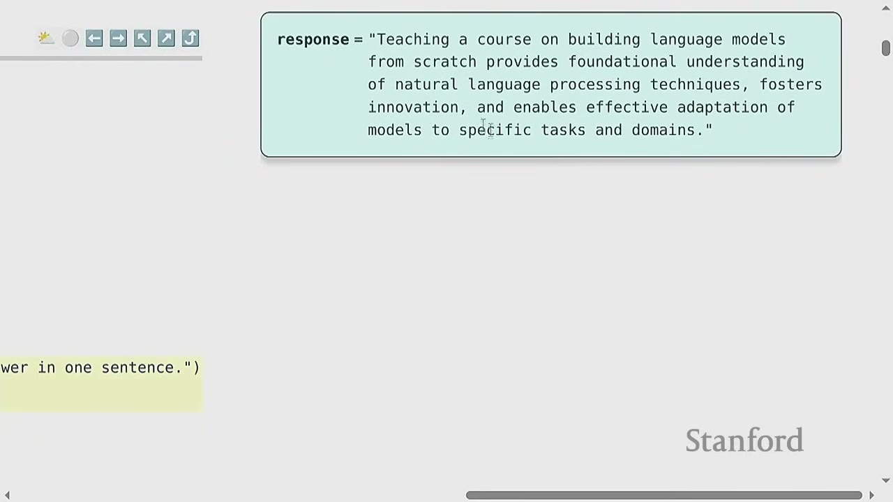
The motivation for creating this course stems from a perceived crisis in the field of AI research.
- Problem: Researchers are becoming increasingly disconnected from the underlying technology.
- 8 years ago: Researchers would implement and train their own models.
- 6 years ago: Researchers would download and fine-tune models like BERT.
- Today: Many researchers primarily interact with proprietary models (e.g., GPT-4, Claude, Gemini) through prompting.
This shift isn't inherently bad, as layers of abstraction boost productivity. However, these abstractions are "leaky," meaning that a deep understanding of the underlying mechanisms is crucial for fundamental research and pushing the boundaries of the field.
- Course Philosophy: To truly understand the technology, you have to build it.
[3:59] The Industrialization of Language Models
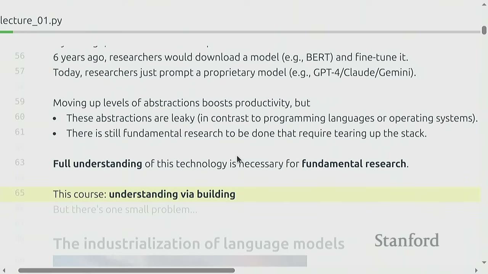
A significant challenge in building language models is their industrial scale: - GPT-4: Rumored to have 1.8 trillion parameters, costing \$100 million to train. - xAI: Building clusters with 200,000 H100 GPUs to train Grok. - Stargate (OpenAI, Nvidia, Oracle): Supposedly a \$500 billion investment over 4 years.
Furthermore, there's a lack of public details on how these frontier models are built. The GPT-4 technical report explicitly states that due to competitive landscape and safety limitations, they disclose no details about their architecture, training data, or methods.
[4:54] "More is Different"
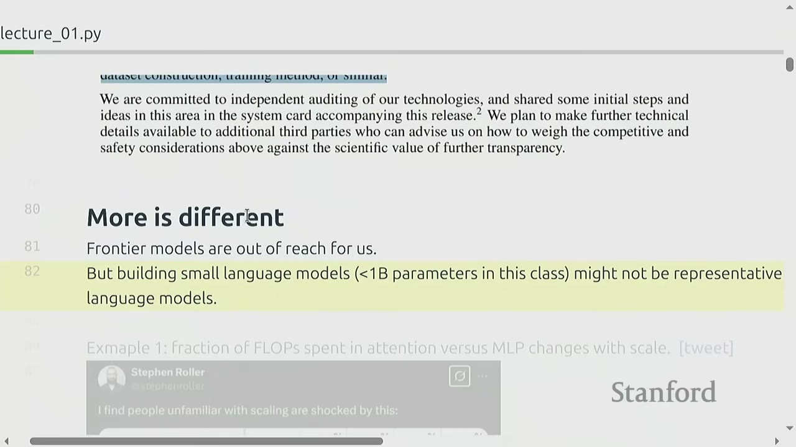
Frontier models are often out of reach for individual researchers. The small language models built in this class (e.g., <1B parameters) might not be representative of large models.
-
Example 1: Fraction of FLOPs spent in attention vs. MLP changes with scale.
- For small models, FLOPs are roughly comparable between attention and MLP layers.
- For large models (e.g., 175B parameters), MLP layers dominate FLOPs.
- Implication: Optimizing attention at small scales might be optimizing the wrong thing for large scales.
-
Example 2: Emergence of behavior with scale (Wei+ 2022).
- Many tasks show a "phase transition" where accuracy remains low for a long time as training FLOPs increase, then suddenly jumps when a certain scale is reached.
- Implication: Research at small scales might lead to incorrect conclusions about model capabilities if emergent behaviors only appear at larger scales.
[7:00] What Can We Learn That Transfers to Frontier Models?
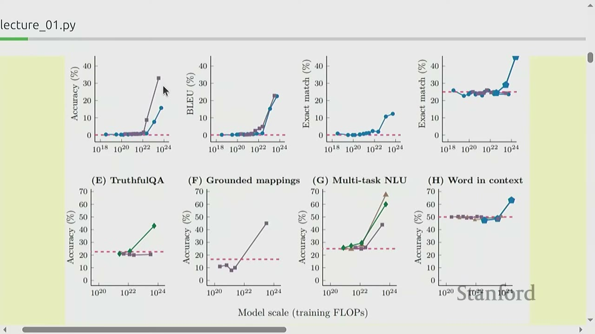
There are three types of knowledge: 1. Mechanics: How things work (e.g., what a Transformer is, how model parallelism leverages GPUs). This can be taught effectively. 2. Mindset: Squeezing the most out of hardware, taking scaling seriously (scaling laws). This is crucial, as the scaling mindset pioneered by OpenAI led to the current generation of AI models. 3. Intuitions: Which data and modeling decisions yield good accuracy. This can only be partially taught, as intuitions developed at small scales may not transfer to large scales.
[8:44] Intuitions?
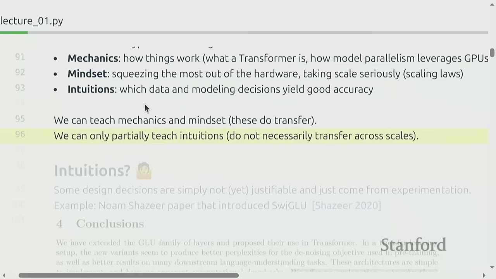
Some design decisions are not purely justifiable and come from experimentation. For example, the SwiGLU activation function (Shazeer 2020) was adopted due to its empirical success, with the paper honestly stating, "We offer no explanation as to why these architectures seem to work; we attribute their success, as all else, to divine benevolence." This highlights the limits of current understanding.
[9:33] The Bitter Lesson
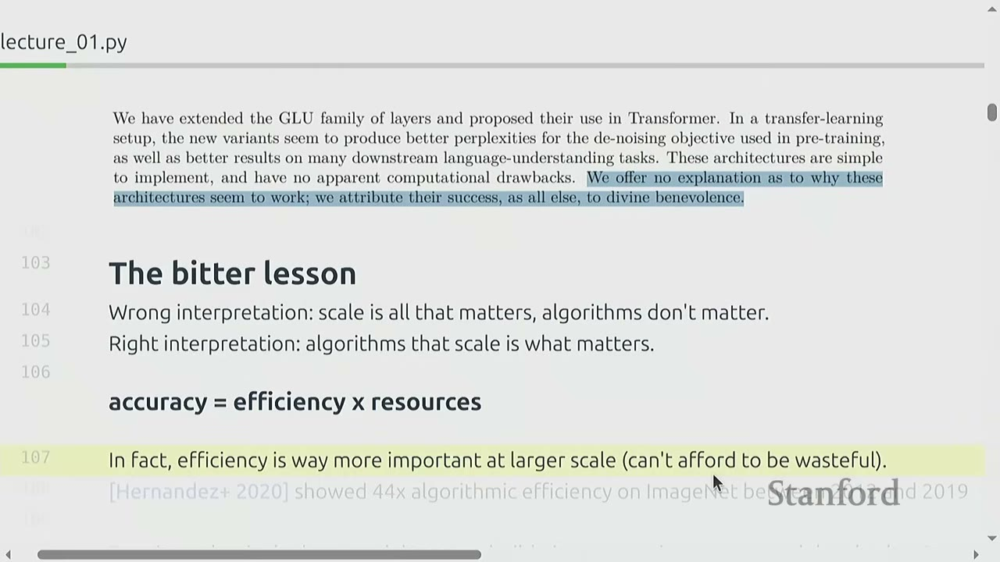
- Wrong Interpretation: Scale is all that matters, algorithms don't matter.
- Right Interpretation: Algorithms that scale is what matters.
Accuracy is a product of efficiency and resources ($accuracy = efficiency \times resources$). Efficiency is even more important at larger scales because one cannot afford to be wasteful.
-
Hernandez+ 2020: Showed 44x algorithmic efficiency improvement on ImageNet between 2012 and 2019. This improvement is faster than Moore's Law, demonstrating that algorithmic innovation is critical.
-
Framing: What is the best model one can build given a certain compute and data budget? In other words, maximize efficiency! This question is relevant at any scale.
[11:17] Current Landscape (History)
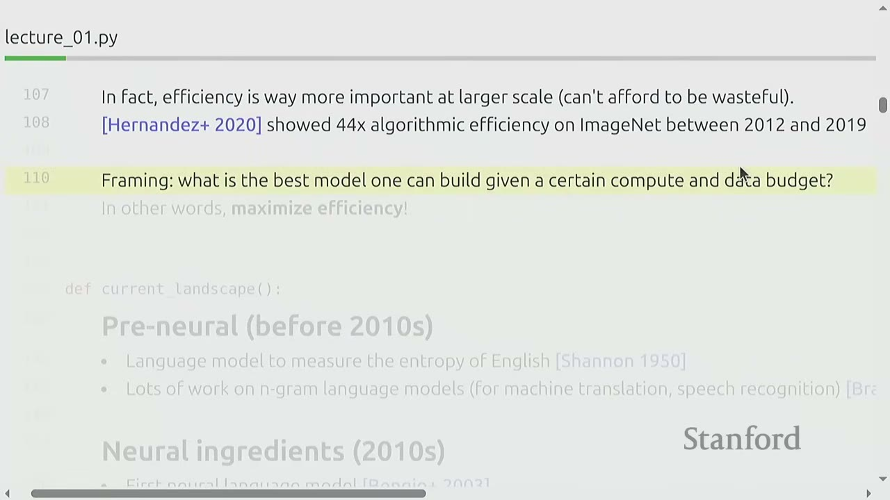
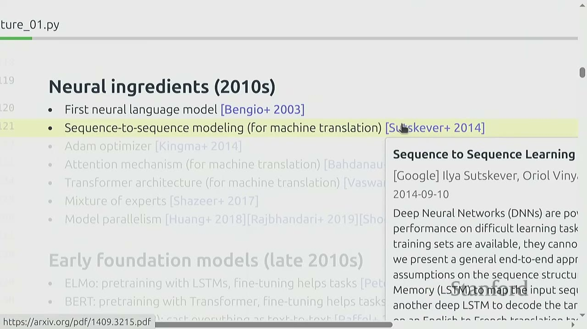
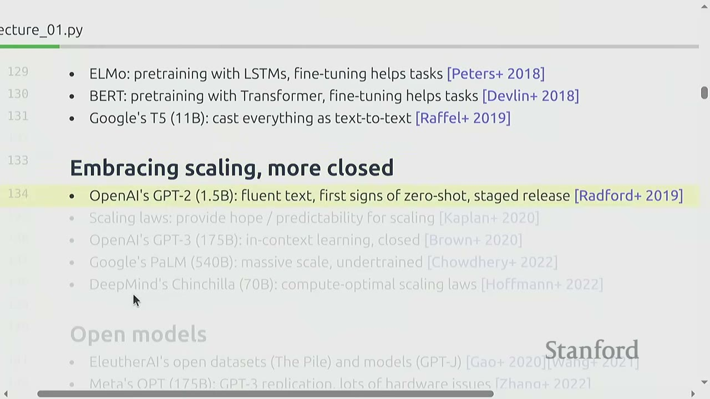
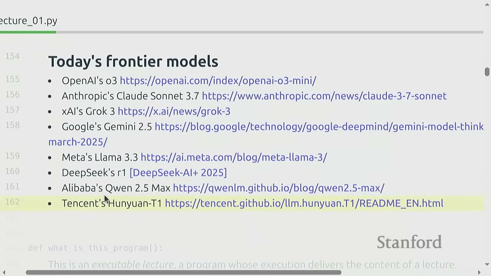
-
Pre-neural (before 2010s):
- Language models were used to measure the entropy of English (Shannon 1950).
- Lots of work on n-gram language models for machine translation and speech recognition (Brants+ 2007). Google trained 5-gram models on 2 trillion tokens, a scale only recently matched by modern LMs.
-
Neural Ingredients (2010s):
- First neural language model (Bengio+ 2003).
- Sequence-to-sequence modeling (Sutskever+ 2014).
- Adam optimizer (Kingma+ 2014) - still widely used.
- Attention mechanism (Bahdanau+ 2014) - developed for machine translation.
- Transformer architecture (Vaswani+ 2017) - "Attention Is All You Need".
- Mixture of experts (Shazeer+ 2017).
- Model parallelism (Huang+ 2018, Rajbhandari+ 2019, Shoeybi+ 2019) - techniques to train models with 100B+ parameters.
- All these ingredients were in place by 2020.
-
Early Foundation Models (late 2010s):
- ELMo: pretraining with LSTMs, fine-tuning helps tasks (Peters+ 2018).
- BERT: pretraining with Transformers, fine-tuning helps tasks (Devlin+ 2018).
- Google's T5 (11B): cast everything as text-to-text (Raffel+ 2019).
- These models were very exciting at the time, paving the way for larger models.
-
Embracing Scaling, More Closed:
- OpenAI's GPT-2 (1.5B): fluent text, first signs of zero-shot, staged release (Radford+ 2019).
- Scaling laws: provide hope/predictability for scaling (Kaplan+ 2020).
- OpenAI's GPT-3 (175B): in-context learning, closed (Brown+ 2020).
- Google's PaLM (540B): massive scale, undertrained (Chowdhery+ 2022).
- DeepMind's Chinchilla (70B): compute-optimal scaling laws (Hoffmann+ 2022).
- This era saw a shift towards closed, proprietary models.
-
Open Models:
- EleutherAI's open datasets (The Pile) and models (GPT-J) (Wang+ 2021).
- Meta's OPT (175B): GPT-3 replication, lots of hardware issues (Zhang+ 2022).
- Hugging Face / BigScience's BLOOM: focused on data sourcing (Workshop+ 2022).
- Meta's Llama models (Touvron+ 2023).
- Alibaba's Qwen models (Qwen+ 2024).
- DeepSeek's models (DeepSeek-AI+ 2024).
- AI2's OLMo models (Groeneveld+ 2024).
- This trend towards open models allows researchers to study and build upon frontier models.
-
Levels of Openness:
- Closed models: (e.g., GPT-4o), API access only [OpenAI+ 2023].
- Open-weight models: (e.g., DeepSeek), weights available, paper with architecture details, some training details, no data details [DeepSeek-AI+ 2024].
- Open-source models: (e.g., OLMo), weights and data available, paper with most details (but not the rationale, failed experiments) [Groeneveld+ 2024].
-
Today's Frontier Models:
- OpenAI's GPT-4o, Anthropic's Claude 3.5 Sonnet, xAI's Grok 3, Google's Gemini 2.5, Meta's Llama 3.3, DeepSeek's r1, Alibaba's Qwen 2.5 Max, Tencent's Hunyuan-T1.
- The current landscape is dominated by these large, often closed, models. The course will revisit early ingredients and trace how techniques work, then move towards best practices using information from the open community and by reading between the lines of closed models.
[18:04] What is this program?
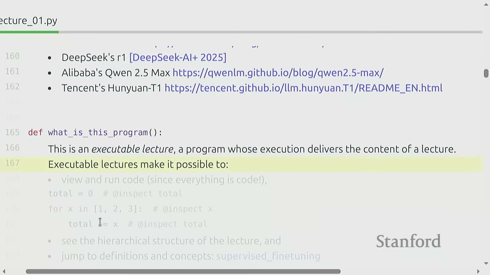
The lecture itself is an executable program, allowing for: - Viewing and running code (since everything is code). - Stepping through code and inspecting variables. - Seeing the hierarchical structure of the lecture. - Jumping to definitions and concepts.
def what_is_this_program():
"""
This is an executable lecture, a program whose execution delivers the content of a lecture.
Executable lectures make it possible to:
- View and run code (since everything is code!),
total = 0
for x in [1, 2, 3]: # @inspect x
total += x # @inspect total
- see the hierarchical structure of the lecture, and
- jump to definitions and concepts: supervised_finetuning
"""
pass
# All information online: https://stanford-cs336.github.io/spring2025/
[19:12] Course Logistics
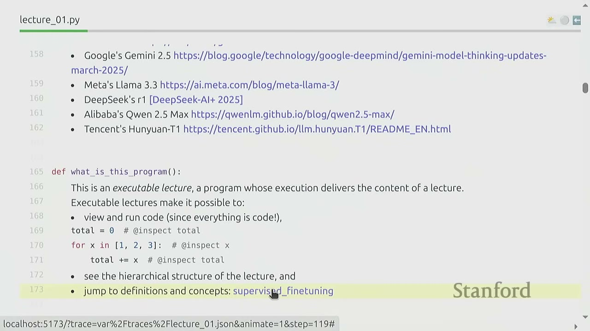
- Website: https://stanford-cs336.github.io/spring2025/
- Units: 5-unit class.
- Warning: A previous course evaluation noted: "The entire assignment was approximately the same amount of work as all 5 assignments from CS 224n plus the final project. And that's just the first homework assignment."
[20:59] Why You Should Take This Course
- You have an obsessive need to understand how things work.
- You want to build up your research engineering muscles.
[21:32] Why You Should Not Take This Course
- You actually want to get research done this quarter (talk to your advisor).
- You are interested in learning about the hottest new techniques in AI (e.g., multimodality, RAG, etc.). (You should take a seminar class for that.)
- You just want to get good results on your own application domain. (You should just prompt or fine-tune an existing model.)
[22:45] How You Can Follow Along at Home
- All lecture materials and assignments will be posted online, so feel free to follow on your own.
- Lectures are recorded via GCOE and will be made available on YouTube (with some lag).
- We plan to offer this class again next year.
[23:21] Assignments
- 5 assignments: Covering basics, systems, scaling laws, data, alignment.
- No scaffolding code: Students are given a blank file to implement components.
- Unit tests and adapter interfaces: Provided to help check correctness.
- Local development: Implement locally to test for correctness, then run on cluster for benchmarking (accuracy and speed).
- Leaderboard: For some assignments (e.g., Assignment 3), minimize perplexity given training budget.
- AI tools (e.g., Copilot, Cursor): Can take away from learning, so use at your own risk.
[25:52] Cluster
- Thanks to Together AI for providing a compute cluster (H100s).
- Please read the guide on how to use the cluster.
- Start your assignments early, as the cluster will fill up close to the deadline.
[26:47] It's All About Efficiency
- Resources: Data + hardware (compute, memory, communication bandwidth).
- Goal: How do you train the best model given a fixed set of resources?
- Example: Given a Common Crawl dump and 32 H100s for 2 weeks, what should you do?
[27:14] Design Decisions
The course is organized into five units, each focusing on a set of design decisions: 1. Basics: Tokenization, architecture, loss function, optimizer, learning rate. 2. Systems: Kernels, parallelism, quantization, activation checkpointing, CPU offloading, inference. 3. Scaling Laws: Scaling sequence, model complexity, loss metric, parametric form. 4. Data: Evaluation, curation, transformation, filtering, deduplication, mixing. 5. Alignment: Supervised fine-tuning, reinforcement learning, preference data, verifiers, synthetic data.
[27:44] Overview of the Course Units
[27:44] Basics
- Goal: Get a basic version of the full pipeline working.
- Components: Tokenization, model architecture, training.
[27:55] Tokenization
- Definition: Tokenizers convert between strings and sequences of integers (tokens).
- Intuition: Break up strings into popular segments.
- Process:
encode(string to indices),decode(indices to string). - Course Focus: Byte-Pair Encoding (BPE) tokenizer (Sennrich+ 2015).
- Tokenizer-free approaches: Promising, but not yet scaled to the frontier.
[29:06] Architecture
- Starting point: Original Transformer (Vaswani+ 2017).
- Diagram shows input embeddings, transformer blocks (multi-head attention + position-wise feed-forward), normalization, add & dropout layers, and output probabilities.
- Variants:
- Activation functions: ReLU, SwiGLU (Shazeer 2020).
- Positional encodings: Sinusoidal, RoPE (Su+ 2021).
- Normalization: LayerNorm, RMSNorm (Ba+ 2016), ZNnorm (Zhang+ 2019).
- Placement of normalization: Pre-norm versus post-norm (Xiong+ 2020).
- MLP: Dense, mixture of experts (Shazeer+ 2017).
- Attention: Full, sliding window, linear (Jiang+ 2023), GQA (group-query attention), MHA (multi-head attention), LLA (latent-latent attention) (Ainslie+ 2023, DeepSeek-AI+ 2024).
- State-space models: Hyena (Poli+ 2023) - alternatives to Transformers that don't use attention.
[31:35] Training
- Optimizer: AdamW, Muon, SOAP (Kingma+ 2014, Loshchilov+ 2017, Keller 2024, Vyas+ 2024).
- Learning rate schedule: (e.g., cosine, WSD) (Loshchilov+ 2016, Hu+ 2024).
- Batch size: (e.g., critical batch size) (McCandlish 2018).
- Regularization: (e.g., dropout, weight decay).
- Hyperparameters: (number of heads, hidden dimension): grid search.
- Key Insight: Details matter. Proper tuning can yield orders of magnitude difference in performance.
[32:25] Assignment 1
- Implement BPE tokenizer.
- Implement Transformer, cross-entropy loss, AdamW optimizer, training loop.
- Train on TinyStories and OpenWebText.
- Leaderboard: Minimize OpenWebText perplexity given 90 minutes on an H100 (last year's leaderboard: 3.12).
[33:52] Systems
- Goal: Squeeze the most out of the hardware.
- Components: Kernels, parallelism, inference.
[34:12] Kernels
- What a GPU (A100) looks like: A GPU is a huge array of Streaming Multiprocessors (SMs) that perform floating-point operations. Memory (DRAM) is off-chip, while L1/L2 caches are on-chip.
- Analogy: DRAM (memory) is a warehouse, SRAM (compute) is a factory.
- Bottleneck: Bandwidth cost (data movement).
- Trick: Organize computation to maximize utilization of GPUs by minimizing data movement.
- Techniques: Fusion, tiling.
- Course Focus: Write kernels in Triton (OpenAI's framework for GPU programming).
[36:09] Parallelism
- Challenge: Data movement between GPUs is even slower than within a single GPU.
- Principle: Minimize data movement.
- Techniques:
- Use collective operations (e.g., gather, reduce, all-reduce).
- Shard (parameters, activations, gradients, optimizer states) across GPUs.
- Split computation (data, tensor, pipeline) parallelism.
[37:11] Inference
- Goal: Generate tokens given a prompt (needed to actually use models!).
- Importance: Inference is also needed for reinforcement learning, test-time compute, and evaluation.
- Cost: Globally, inference compute (every use) exceeds training compute (one-time cost).
- Two phases: Prefill and decode.
- Prefill: Tokens are given, can process all at once (compute-bound). Similar to training.
- Decode: Need to generate one token at a time (memory-bound). Autoregressive generation is memory-bound due to frequent data movement.
- Methods to speed up decoding:
- Use cheaper models (via model pruning, quantization, distillation).
- Speculative decoding: Use a cheaper "draft" model to generate multiple tokens, then use the full model to score in parallel (exact decoding!).
- Systems optimizations: KV caching, batching.
[39:50] Assignment 2
- Implement a fused RMSNorm kernel in Triton.
- Implement distributed data parallel training.
- Implement optimizer state sharding.
- Benchmark and profile the implementations.
- Key Habit: Always benchmark and profile your implementations to understand performance and bottlenecks.
[40:51] Scaling Laws
- Goal: Do experiments at small scale, predict hyperparameters/loss at large scale.
- Question: Given a FLOPs budget ($C$), use a bigger model ($N$) or train on more tokens ($D$)?
- Compute-optimal scaling laws: (Kaplan+ 2020, Hoffmann+ 2022).
- Basic idea: For a given compute budget, there's an optimal balance between model size and training data.
- Rule of thumb: $D \approx 20 \times N$. (e.g., a 1.4B parameter model should be trained on 28B tokens).
- Limitation: This rule doesn't take into account inference costs.
[43:00] Assignment 3
- Define a training API (hyperparameters -> loss) based on previous runs.
- Submit "training jobs" (under a FLOPs budget) and gather data points.
- Fit a scaling law to the data points.
- Submit predictions for scaled up hyperparameters.
- Leaderboard: Minimize loss given FLOPs budget.
- Key Skill: Prioritizing experiments and resource allocation, similar to frontier labs.
[44:50] Data
- Question: What capabilities do we want the model to have?
- Answer: The model's capabilities are largely determined by the data it's trained on (e.g., multilingual data -> multilingual capabilities, code data -> code capabilities).
[45:32] Composition of the Pile by Category
- Data sources are diverse: web crawls (Common Crawl), books, arXiv papers, GitHub code, Wikipedia, StackExchange, etc.
[45:56] Evaluation
- Perplexity: Textbook evaluation for language models.
- Standardized testing: (e.g., MMLU, HellaSwag, GSM8K).
- Instruction following: (e.g., AlpacaEval, IFEval, WildBench).
- Scaling test-time compute: Chain-of-thought, ensembling.
- LM-as-a-judge: Evaluate generative tasks.
- Full system: RAG, agents.
[46:45] Data Curation
- Key Insight: Data does not just fall from the sky. It needs to be actively acquired and processed.
- Sources: Webpages crawled from the Internet, books, arXiv papers, GitHub code, etc.
- Legal Questions: Appeal to fair use to train on copyright data (Henderson+ 2023).
- Commercial Data: Frontier models often buy data (e.g., Google with Reddit data) as publicly available data is limited for state-of-the-art performance.
- Formats: HTML, PDF, directories (not text!).
[47:26] Look at Web Data
- Example of raw Common Crawl data: shows a mix of HTML, foreign languages, and spammy content.
- Observation: A lot of web data is "trash" and requires significant processing.
[48:29] Data Processing
- Transformation: Convert HTML/PDF to text (preserve content, some structure, rewriting).
- Filtering: Keep high quality data, remove harmful content (via classifiers).
- Deduplication: Save compute, avoid memorization (use Bloom filters or MinHash).
[50:00] Assignment 4
- Convert Common Crawl HTML to text.
- Train classifiers to filter for quality and harmful content.
- Deduplication using MinHash.
- Leaderboard: Minimize perplexity given token budget.
[50:21] Alignment
- Problem: A base model is raw potential, very good at completing the next token, but needs to be made useful.
- Alignment: The process of making the model actually useful.
- Goals of alignment:
- Get the language model to follow instructions.
- Tune the style (format, length, tone, etc.).
- Incorporate safety (e.g., refusals to answer harmful questions).
[51:44] Two Phases
-
Supervised Fine-tuning (SFT):
- Instruction data: Prompt, response pairs (e.g., ChatExample).
- Intuition: Base model already has the skills, just need few examples to surface them (Zhou+ 2023).
- Learning: Fine-tune model to maximize $P(response | prompt)$.
- SFT is relatively simple and effective for initial alignment.
-
Learning from Feedback:
- Goal: Make it better without expensive annotation.
- Preference data: Generate multiple responses using model (e.g., A, B) to a given prompt. User provides preferences (e.g., A < B or A > B).
- Verifiers:
- Formal verifiers: (e.g., for code, math).
- Learned verifiers: Train an LM as-a-judge (RLHF).
- Algorithms:
- Proximal Policy Optimization (PPO): From reinforcement learning (Schulman+ 2017, Ouyang+ 2022).
- Direct Policy Optimization (DPO): For preference data, simpler (Rafailov+ 2023).
- Group Relative Preference Optimization (GRPO): Remove value function (Shao+ 2024).
[55:04] Assignment 5
- Implement supervised fine-tuning.
- Implement Direct Preference Optimization (DPO).
- Implement Group Relative Preference Optimization (GRPO).
- Evaluate.
[55:59] Efficiency Drives Design Decisions (Recap)
- Today, we are compute-constrained, so design decisions reflect squeezing the most out of given hardware.
- Data processing: Avoid wasting precious compute updating on bad/irrelevant data.
- Tokenization: Working with raw bytes is elegant, but compute-inefficient with today's model architectures.
- Model architecture: Many changes motivated by reducing memory or FLOPs (e.g., sharing KV caches, sliding window attention).
- Training: We can get away with a single epoch!
- Scaling laws: Use less compute on smaller models to do hyperparameter tuning.
- Alignment: If tune model more to desired use cases, require smaller base models.
[58:09] Tomorrow: Data-Constrained Regime
- Increasingly, frontier labs are becoming data-constrained.
- This will likely shift design decisions.
- Example: Training for one epoch doesn't make sense if you have more compute; you'd train for more epochs or use smarter techniques.
- Example: Different architectures might emerge, as the Transformer was motivated by compute efficiency.
- The design decisions will reflect the regime we're in.
[59:01] Tokenization (Deep Dive)
This unit is inspired by Andrej Karpathy's video on tokenization.
[59:50] Intro to Tokenization
- Raw text: Generally represented as Unicode strings.
- Indices: Language model places a probability distribution over sequences of tokens (usually represented by integer indices).
- Tokenizer: A class that implements
encode(strings to tokens) anddecode(tokens back into strings) methods. - Vocabulary size: Number of possible tokens (integers).
[1:01:25] Tokenization Examples
- Tiktoken (GPT-4o): An interactive site to visualize tokenization.
- Observations:
- A word and its preceding space are part of the same token (e.g., " world").
- A word at the beginning and in the middle are represented differently (e.g., "hello hello").
- Numbers are tokenized into every few digits.
- The spacing before a token is intentional, as part of the BPE process.
- "hello" and " hello" are different tokens, which can cause problems.
- Observations:
[1:05:17] Character-Based Tokenization
- Concept: A Unicode string is a sequence of Unicode characters. Each character is converted into a code point (integer) via
ord(). - Example:
ord('a')is 97,ord('🌎')is 127757. - Problem 1: Very large vocabulary (up to 150K Unicode characters).
- Problem 2: Many characters are quite rare, leading to inefficient use of the vocabulary.
- Compression ratio: Number of bytes / number of tokens. For character-based tokenization, the compression ratio is ~1.5 (for "Hello, 🌎! 你好!").
[1:07:15] Byte-Based Tokenization
- Concept: Unicode strings can be represented as a sequence of bytes (integers between 0 and 255). The most common Unicode encoding is UTF-8.
- Example:
bytes('a', encoding="utf-8")isb'a'. Some characters take multiple bytes (e.g.,bytes('🌎', encoding="utf-8")isb'\xf0\x9f\x8c\x8e'). - Problem: Long sequences. Compression ratio is 1 (1 byte per token). This is terrible for Transformers due to quadratic attention complexity.
[1:09:16] Word-Based Tokenization
- Concept: Another approach (closer to what was done classically in NLP) is to split strings into words.
- Example: Using regex to find all alphanumeric characters together (words).
- Problem 1: The number of words is huge (for Unicode characters).
- Problem 2: Many words are rare and the model won't learn much about them.
- Problem 3: This doesn't obviously provide a fixed vocabulary size.
- Problem 4: New words not seen during training get a special UNK token, which is ugly and can mess up perplexity calculations.
[1:11:04] Byte Pair Encoding (BPE)
- History: Introduced by Philip Gage in 1994 for data compression. Adapted to NLP for neural machine translation by Sennrich+ 2015. Previously, papers had been using word-based tokenization. BPE was then used by GPT-2 (Radford+ 2019).
- Basic Idea: Train the tokenizer on raw text to automatically determine the vocabulary.
- Intuition: Common sequences of characters are represented by a single token. Rare sequences are represented by many tokens.
- GPT-2 detail: Uses word-based tokenization to break up the text into initial segments and then runs the original BPE algorithm on each segment. (This is what you'll do in this class).
[1:12:44] Training the Tokenizer
- Algorithm:
- Start with the list of bytes of a string.
- Count the number of occurrences of each pair of adjacent tokens.
- Find the most common pair.
- Merge that pair: Create a new token (e.g., 256) to represent the merged pair.
- Replace all occurrences of the pair with the new token in the sequence.
- Repeat steps 2-5 for a specified number of merges (
num_merges).
- Example: "the cat in the hat"
- Initial bytes:
[116, 104, 101, 32, 99, 97, 116, 32, 105, 110, 32, 104, 97, 116] - After 1 merge (116, 104 -> 256):
[256, 101, 32, 99, 97, 256, 32, 105, 110, 32, 256] - After 2 merges (256, 32 -> 257):
[257, 101, 99, 97, 257, 105, 110, 257] - After 3 merges (257, 101 -> 258):
[258, 99, 97, 257, 105, 110, 257]
- Initial bytes:
- Observation: The sequence shrinks with each merge, increasing compression ratio.
[1:16:11] Using the New Tokenizer
- Encoding: Convert string to initial bytes, then replay the merges in the order they occurred.
- Decoding: Convert tokens back to bytes, then bytes to string.
- Implementation: In Assignment 1, you'll implement this from scratch. Your goal is to make the implementation fast.
[1:17:47] Summary of Tokenization
- Tokenizer: Maps strings to tokens (indices).
- Character-based, byte-based, word-based tokenization: Highly suboptimal.
- BPE: An effective heuristic that looks at corpus statistics.
- Future: BPE is a necessary evil, maybe one day we'll just do it from bytes.
Practical Takeaways
- Build to Understand: Deep understanding of ML systems comes from implementing them from scratch.
- Efficiency is Key: Optimize algorithms and resource usage, especially at scale, to maximize accuracy per resource.
- Scaling Laws Inform Design: Use small-scale experiments and scaling laws to predict large-scale behavior and make informed design decisions.
- Data Quality and Curation: Data is not "free" or "clean"; active acquisition, processing, filtering, and deduplication are critical.
- Alignment is Crucial: Base models need to be aligned to follow instructions, tune style, and ensure safety.
- Tokenization Trade-offs: Different tokenization methods (character, byte, word, BPE) involve trade-offs between vocabulary size, sequence length, and efficiency.
Open Questions / Things to Remember
- How do emergent behaviors at scale impact research conducted at smaller scales?
- What are the ethical and legal implications of using copyrighted data for training LMs?
- How will the shift to data-constrained regimes impact future model architectures and training methodologies?
- What are the most promising alternatives to the Transformer architecture (e.g., state-space models) and how do they address current limitations?
- How can we develop more robust and transferable intuitions about model behavior across different scales?
- What are the practical limits of "divine benevolence" in explaining model successes, and how can we move towards more principled understanding?